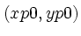
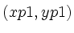
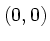
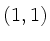
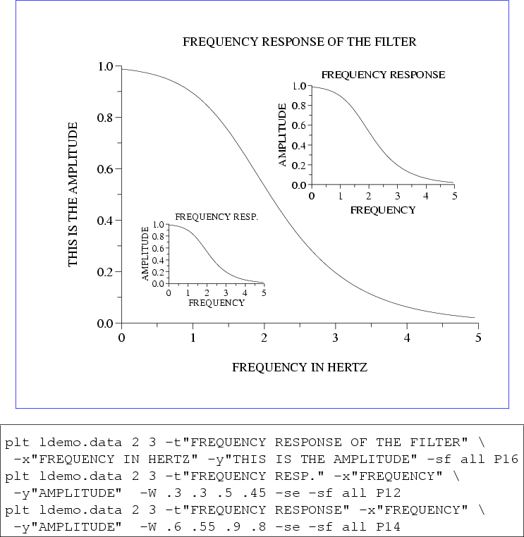

In this section, the concept of using multiple windows within a single screen or page is introduced. You will need to become familiar with the following options:
-W xp0 yp0 xp1 yp1
-w type subsection
The arguments of the -W option are the page coordinates of the lower left  and upper right  corners of the plot window. (Recall that the default plot window, which fills the entire page or screen, has corners with page coordinates  and .) All output is scaled to fit within this window.
Study figure 7.4, in which the -W option is used to scale entire plots and the -s e option (see chapter 10) is used to suppress erasure so that the plots appear on the same page.
|  |
The -w option can address several windows that have been predefined for convenience. The first argument of -w may be m (a single window that fits within a frame to be described shortly), b (one of two windows covering either the top or bottom of the page), or q (one of four windows covering the upper left, upper right, lower left, or lower right quadrant of the page). The variant types ms, bs, and qs are windows of reduced size to allow extra room for axis labels. Use the subsection argument (which may have values 0, 1, 2, 3, or 4) to specify which window is to be used for the current plot. By convention, subsection 0 is used to start a new page (erase the screen) and to draw a grid and a title for the page. When using subsections 1, 2, 3, or 4, the plot is drawn on the current page without erasing anything that may have been plotted there already.
Figures 7.5, 7.6, and 7.7 illustrate the use of -wm, -wb, and -wq respectively. All three use the data file example11.data, which contains:
0 0 0 9 1 1 3 1 6 0 2 2 2 7 1 3 4 3 4 2 4 3 4 5 3 5 5 3 3 4 6 4 2 4 3 7 7 1 2 2 8 6 0 3 1 9 9 1 0 0
When reducing the size of a plot, it is often desirable to avoid rescaling any text in the plot, so that it remains readable. The -ch option makes this possible: